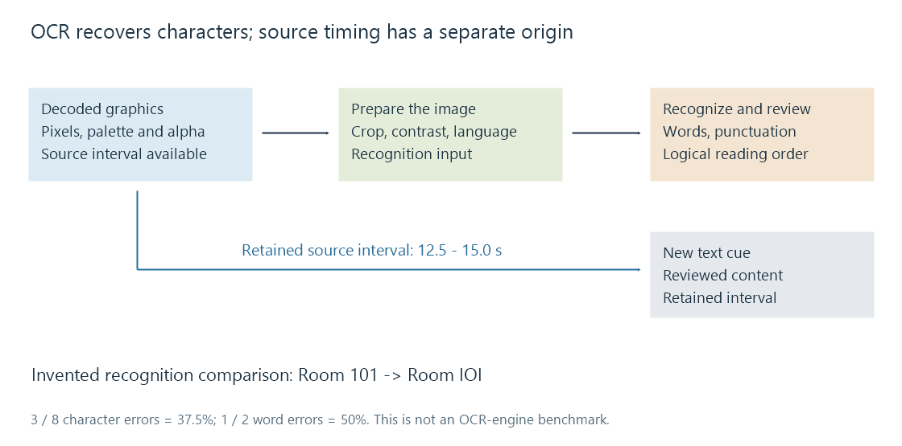

Subtitle OCR
Subtitle OCR recognizes character text from subtitle graphics and combines it with recovered timing and reviewed reading order.
OCR, optical character recognition, turns pictured letters into character text. For subtitle graphics, it normally follows decoding the image and its palette. The recognition result is then combined with the recovered subtitle intervals.
It does not extract a hidden text sentence from PGS or DVDSub. It estimates characters from the visible shapes.
Prepare the actual lettering for recognition
A subtitle decoder first reconstructs the image from pixel runs, palette and transparency. A useful OCR input then needs the appropriate region, readable contrast and suitable treatment of its outline/background.

White lettering on a transparent background illustrates the problem. Blending it onto a white page can remove the contrast needed to recognize the fill. Choosing a suitable background, retaining a useful outline or transforming the image can yield a more legible input.
Tesseract's quality documentation discusses alpha handling, scaling, noise, borders, skew and page-segmentation assumptions. An OCR engine expecting a full scanned page can interpret a small subtitle line differently from one configured for that kind of region.
The selected language/model affects character possibilities. A Latin-only assumption is a poor starting point for an Arabic, Hebrew or CJK caption. Mixed scripts and numerals require particular attention.
The image's timing comes from the subtitle stream
If a decoded presentation is active from 12.5 to 15 seconds, those times are available independently of whether OCR reads its words correctly. Recognition does not need to invent a new speech-alignment time for every image.
The difficult cases are updates: an image can change while part of the line remains, or another line can be added. Treating each update as a completely new sentence can create duplicates. Conversely, collapsing two similar images can lose a word that actually changed.
A converter must resolve the source's display state and intervals, then decide how to represent them as text cues.
A small error can change the meaning
Take this invented reference and recognition output:
Reference: Room 101
OCR: Room IOI
The output looks like the same short label, but three characters have changed from digits to letters. It is not reliable navigation text.
Using a character edit-distance comparison that includes the space, the reference has 8 characters. Three substitutions give a 37.5% character error rate:
CER = (substitutions + deletions + insertions) / reference characters
= 3 / 8 = 0.375
With whitespace-separated words, the reference has two words. One substituted word gives a 50% word error rate. These are measures for this defined example, not an OCR-engine benchmark.
Longer dialogue can have a low average error score while still containing a wrong name, negation or number. A recognition confidence value is another engine-specific observation; it is not automatically a calibrated probability that the displayed sentence is correct.
Review content and order before saving it
Useful review targets include names, addresses, digits, punctuation, accented letters, speaker labels and sound descriptions. Compare against the decoded image, not just the neighboring text generated by the same recognizer.
Multi-line reading order matters. Bidirectional text also needs logical character order rather than a string assembled by reversing visually located glyphs.
The new text should use an intentional character encoding. Saving correctly recognized text through an unsuitable legacy encoding can lose characters after recognition succeeded.
For Emby, OCR can make a bitmap subtitle available as an editable text representation for an appropriate route. The new file still needs its matched edition, retained intervals and content review.
See Also
- Bitmap subtitles
- Subtitle extraction
- Subtitle character encoding
- Right-to-left subtitles
- Subtitle format conversion